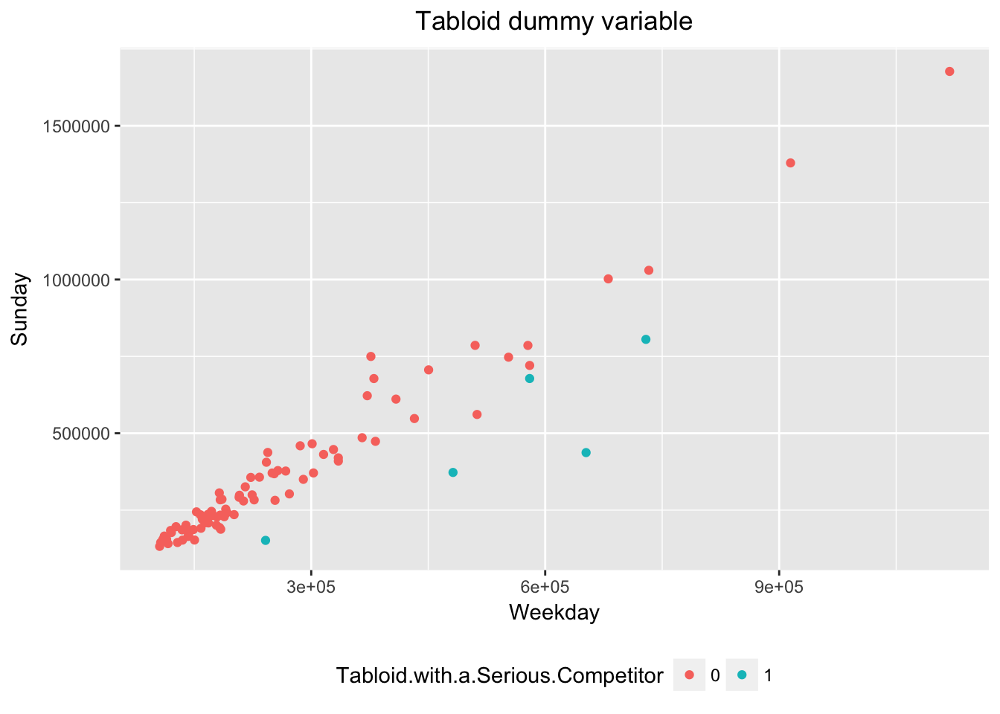
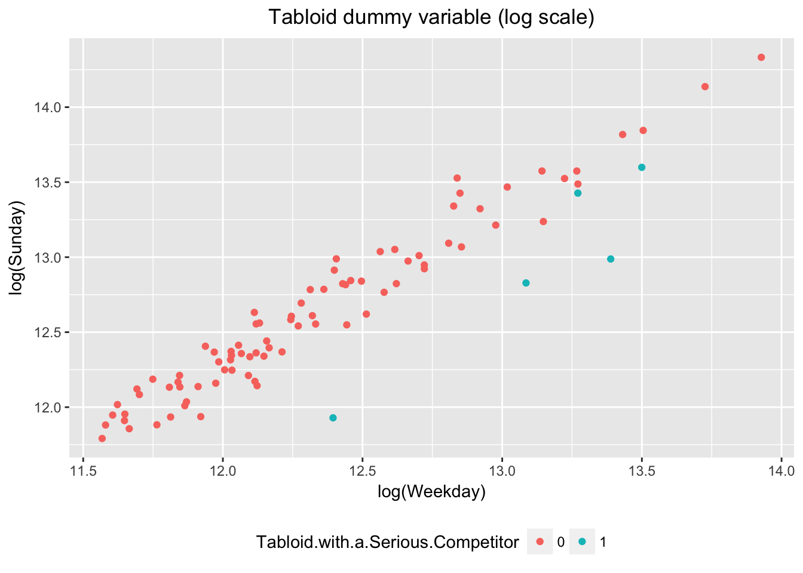
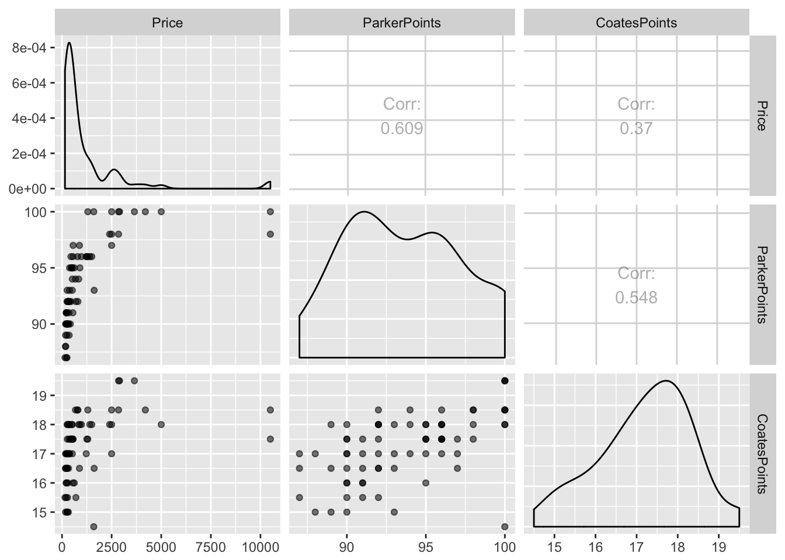
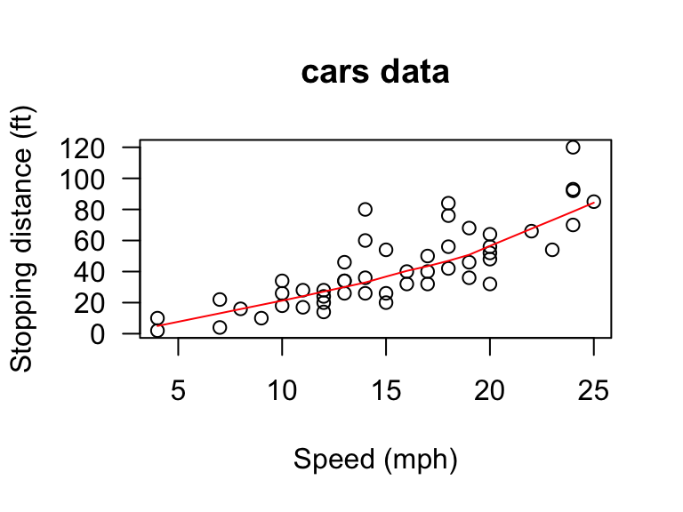
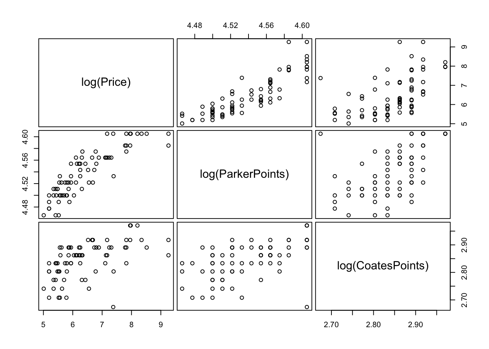
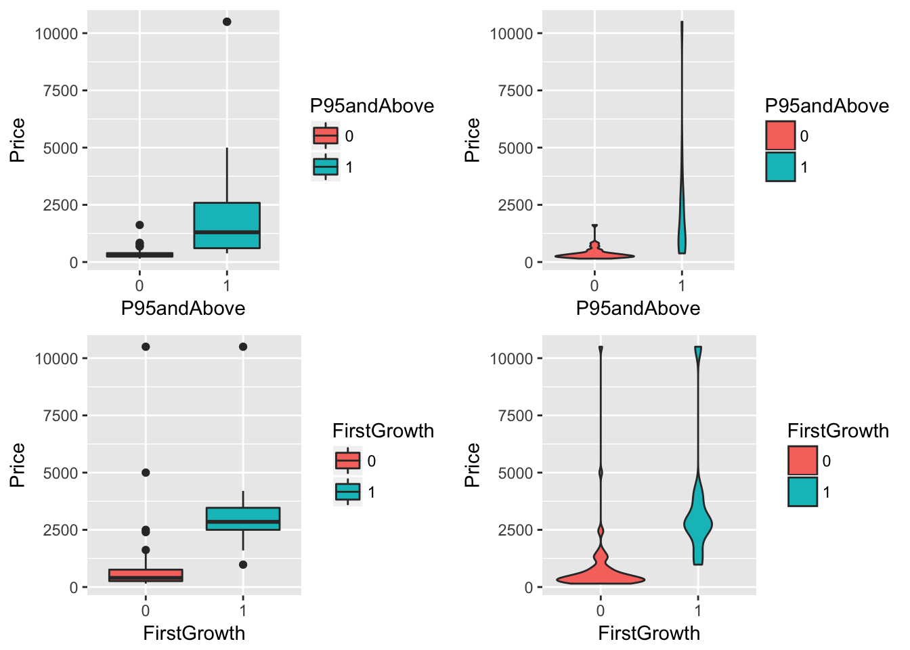

Lab 4 - Exploratory data analysis
library(data.table)
library(ggplot2)
marr_path = "http://www.stat.tamu.edu/~sheather/book/docs/datasets/"Newspaper Circulation
circulation <- fread(paste0(marr_path,"circulation.txt"))
dt = circulation
colnames(dt)## [1] "Newspaper" "Sunday"
## [3] "Weekday" "Tabloid with a Serious Competitor"colnames(dt) = make.names(colnames(dt)) # fix illegal names
colnames(dt)## [1] "Newspaper" "Sunday"
## [3] "Weekday" "Tabloid.with.a.Serious.Competitor"dt[,
Tabloid.with.a.Serious.Competitor := factor(Tabloid.with.a.Serious.Competitor)]
#Figure 1.3 on page 5
require(ggplot2)
g = ggplot(dt, aes(x = Weekday, y = Sunday, color = Tabloid.with.a.Serious.Competitor))
g + geom_point() + theme(plot.title = element_text(hjust = 0.5), legend.position = "bottom") + ggtitle("Tabloid dummy variable")
#Figure 1.4 on page 5
g = ggplot(dt, aes(x = log(Weekday), y = log(Sunday), color = Tabloid.with.a.Serious.Competitor))
g + geom_point() + theme(plot.title = element_text(hjust = 0.5), legend.position = "bottom") + ggtitle("Tabloid dummy variable (log scale)")
Effect of Wine Critics’ Ratings on Prices of Bordeaux Wines
Bordeaux <- fread(paste0(marr_path,"Bordeaux.csv"))
dt = Bordeaux[,.(Price,ParkerPoints,CoatesPoints)]
#Figure 1.7 on page 10
require(GGally)
ggpairs(dt, mapping = aes(alpha=0.4))
library(corrplot)
M = cor(dt[,.(Price,ParkerPoints,CoatesPoints)])
corrplot.mixed(M, lower="number", upper="ellipse", order="hclust")
#Figure 1.8 on page 11
dt = Bordeaux
bin_vars = names(dt)[5:9]
bin_vars## [1] "P95andAbove" "FirstGrowth" "CultWine"
## [4] "Pomerol" "VintageSuperstar"dt[,(bin_vars) := lapply(.SD, factor), .SDcols = (bin_vars)]
g = ggplot(dt, aes(x = P95andAbove, y = Price, fill = P95andAbove))
bp = g + geom_boxplot()
vp = g + geom_violin()
g = ggplot(dt, aes(x = FirstGrowth, y = Price, fill = FirstGrowth))
bf = g + geom_boxplot()
vf = g + geom_violin()
require(gridExtra)
grid.arrange(bp, vp, bf, vf, nrow=2, ncol=2)
#Figure 1.9 on page 12
par(mfrow=c(1,1))
pairs(log(Price)~log(ParkerPoints)+log(CoatesPoints),data=Bordeaux,gap=0.4,cex.labels=1.5)
#Figure 1.10 on page 13
par(mfrow=c(2,2))
g = ggplot(dt, aes(x = P95andAbove, y = Price, fill = P95andAbove))
bp = g + geom_boxplot()
vp = g + geom_violin()
g = ggplot(dt, aes(x = FirstGrowth, y = Price, fill = FirstGrowth))
bf = g + geom_boxplot()
vf = g + geom_violin()
require(gridExtra)
grid.arrange(bp, vp, bf, vf, nrow=2, ncol=2)